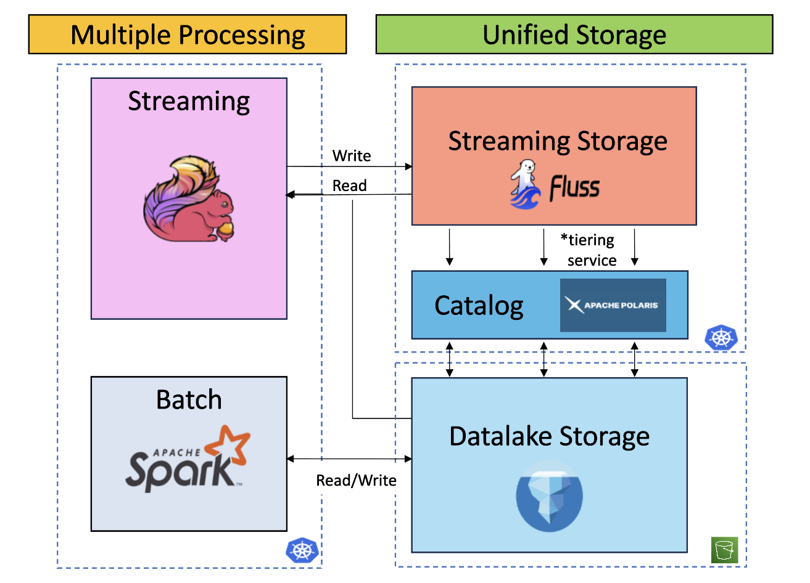

Towards a Streaming Lakehouse
As we delve deeper into a columnar world for data storage and new needs for real time processing emerges through AI, how to maintain a coherent architecture while ensuring governance, performance, operational ease, and avoiding cost explosion?
This is what we aim to solve by implementing a Streaming Lakehouse : unifying storage with one source of truth between hot streaming data and cold historical one and flexible enough to support business needs requiring daily batch pipeline or sub seconds transformations.

Motivation
To understand the need for a streaming lakehouse, it is important to recall the current challenges faced when implementing real-time processing for analytics:
- Operational complexity of streaming applications
- Incompatibility of message queues with analytical workloads
- Difficulty in assessing the workload and challenges of migrating jobs from batch to streaming
These points are detailed below:
Message Queue Challenges
- Difficulty reading both historical and real-time data together (union reads)
- No column pruning: full rows must be read, leading to unnecessary network costs
- Data updates require heavy deduplication processes
Assessing Migration from Batch to Streaming
In practice, how to assess, for a project of this scale, the human workload, business considerations, and potential side effects?
The transition from batch to stream immediately implementation several questions:
- What are the first steps to check technical feasibility?
- If a schema changes, what protocol should be followed?
- How can batch jobs be unified with the streaming layer?
- Should transformations be refactored, and is the current structure capable of supporting this smoothly?
Not to mention: security, logging, test environments, CI/CD, scaling, load testing, financial budget, disaster recovery, versioning, data quality, and the technical skills required.
Implementing a lightweight version of a streaming lakehouse helps explore multiple areas and identify many issues that need to be addressed early in a project.
Streaming Application Challenges
Well known to Flink developers, designing stateful real-time processing applications involves the following challenges:
- Row-based reading instead of columnar (leading to unnecessary network traffic)
- State size explosion
- Difficulty debugging state
- State updates
- Schema evolution
How can these issues be solved? Should new features be added to the Flink framework, or should streaming storage systems also evolve to address them?
What Does Apache Fluss Solve?
Apache Fluss is a core component of a streaming lakehouse. With its tiering service, it enables seamless, periodic transfer of hot data to cold storage. It also introduces columnar streaming using an Apache Arrow implementation and shifts from traditional queue/topic-based messaging to tablets.
This is a key change, as it enables the following:
- Column pruning
- Data updates using KV tablets (avoiding heavy deduplication) with multiple merge engines
Additionally, Flink integration with Fluss (which stands for Flink Unified Streaming Storage) improves:
- State reduction (e.g., delta joins) by moving processing from the application layer to streaming storage (resulting in faster checkpoints, quicker recovery, and lower memory usage)
- Easier debugging by querying Fluss tables directly (less opaque)
- Unified reads of historical and streaming data, handled seamlessly by Flink with Fluss
Implementation
This project is divided into three parts:
- Deployment on Kubernetes with S3 as remote storage: Fluss cluster, Polaris API, Spark, and Flink operators and deployments
- Application-specific features with Flink and Fluss: delta joins, lookups, and materialized tables
- Business use case: customer order first-touch attribution (i.e., how a customer enters the sales funnel)
Challenges and Next Steps
From here, several technical aspects could be explored in more detail:
- Security implementation: at the Kubernetes cluster level or within Fluss applications
- Operational scenarios: step-by-step protocols for performing changes
- Cost and performance analysis
- A clear comparison between Kafka and Fluss
- Choosing between Paimon and Iceberg
For more example use cases, I highly recommend the following articles:
- Real-Time Multi-Dimensional Unique Visitor Deduplication in Practice by Yang Wang
- How Taobao uses Apache Fluss (Incubating) for Real-Time Processing in Search and RecSys by Xinyu Zhang and Lilei Wang
Cite and Share
Please consider adding a star ✨ to the repository if you found this work and documentation useful.
Notes
The title is a reference to the article Towards A Unified Streaming & Lakehouse Architecture by Luo Yuxia (Alibaba Cloud).